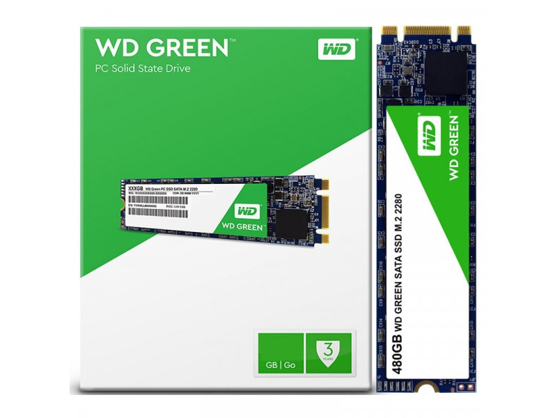

SSD M.2
Postado em 04 de maio de 2020 Arthur Clarke tinha um conceito bem interessante: a crueldade natural dos objetos inanimados, uma espécie de versão filosófica da Lei de Murphy e ela não falha: No meio de um dia de trabalho, uma queda de luz interrompeu meus trabalhos, e meu PC, que não andava muito kosher, resolveu não bootar mais. Por sorte eu havia comprado um notebook 2 em 1 para ler gibis E em caso de emergência quebrar o galho como máquina de produção.
Ele só tem 4GB de RAM, mas é só não ser fominha no Chrome e tudo funciona, mas o HD de 1 TB 5400 rpm se mostrou muito, muito lento pra uma máquina que depende de SWAP o tempo todo. Isso me incentivou a levantar meu traseiro gordo da cadeira e ir comprar um SSD, mas não um SSD qualquer: Como o Acer tinha suporte ao formato M.2, resolvi configurar o bicho com o melhor de dois mundos: um SSD rápido e barato para servir de casinha pro Windows, e manter o HD de 1TB para ter espaço de sobra pro material de trabalho do Meio Bit.